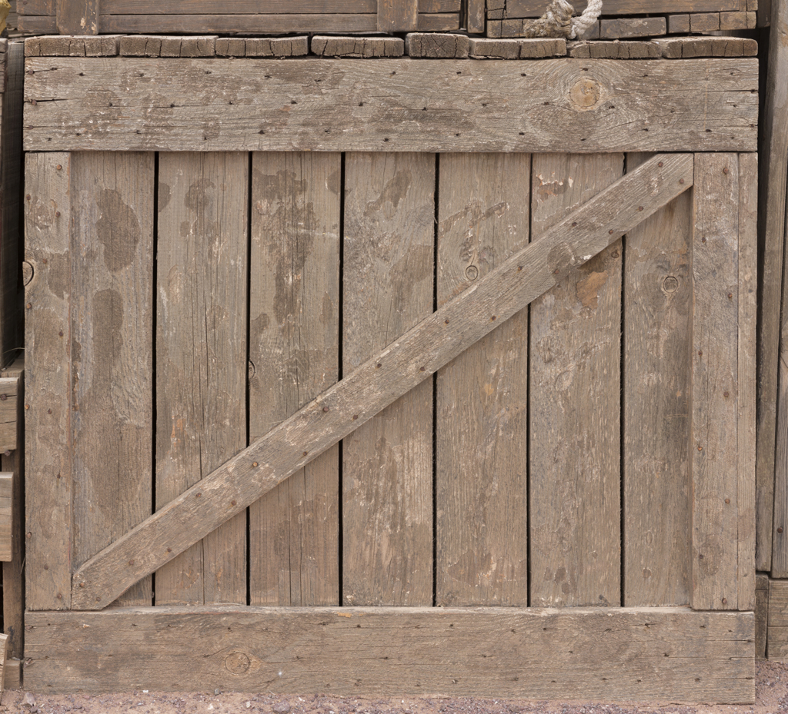
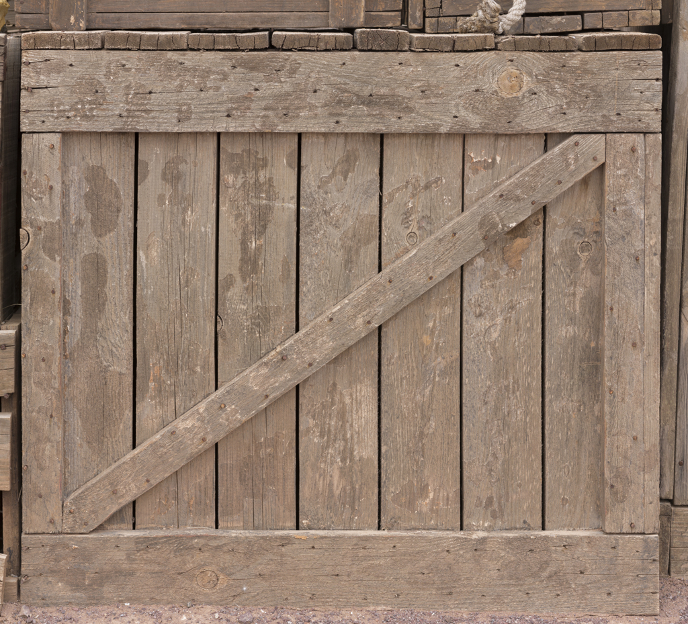

Level 4
The Maze
I finally made it out of the maze. Now i just need to give the old man his boxes before I can go to the Medium
I finally made it out of the maze. Now i just need to give the old man his boxes before I can go to the Medium


 
